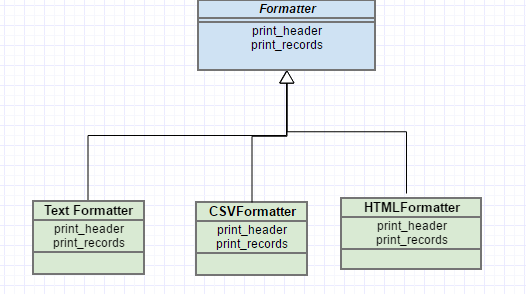

Python : Object Oriented Programming (Inheritance)
Let us first understand the basics of Inheritance in python. A syntax refresher. Given below is a basic inheritance syntax in Python.
class Parent(object):
def fun(self):
print('Parent fun!')
class A (Parent):
def fun(self):
print('A fun')
super().fun()
class B(Parent):
def fun(self):
print ('B fun')
super().fun()
So here we have a parent class and we are deriving class A and B from the Parent. Then we are using super() to
call the base class method from sub class.
p = Parent()
a = A()
b = B()
p.fun()
a.fun()
b.fun()
output..
Parent fun!
------------
A fun
Parent fun!
------------
B fun
Parent fun!
Now let us consider the scenaio of multiple inheritance as shown below. Here we are deriving C from A and B.
class C(A, B):
def fun(self):
print('C fun')
super().fun()
c = C()
c.fun()
outputs..
C fun
A fun
B fun
Parent fun!
So here a question arises why A.fun() gets called before than B.fun(). This can be answered with a concept called as MRO
(Method Resoulution Order) in Python. Every class holds a magic variable called __mro__ which stores the inheritance order.
So a method call get resolved based on this order. Let us print the mro for our classes.
print(C.__mro__)
outputs..
(<class '__main__.C'>, <class '__main__.A'>, <class '__main__.B'>, <class '__main__.Parent'>, <class 'object'>)
So it shows that class A get resolved before B and Parent respectively. So now let us switch the inhertiance order as shown below and see the results.
class C(B, A):
def fun(self):
print('C fun')
super().fun()
print(C.__mro__)
outputs..
(<class '__main__.C'>, <class '__main__.B'>, <class '__main__.A'>, <class '__main__.Parent'>, <class 'object'>)
Now as expected the resoultion order is reversed with class B before A and parent.
Example : TableFormatter
Now let us write a concrete example to solidify our inheritance understanding. Here we want to create a method print_table
which prints tabular data of collection passed to it. In this example we will be making the collection
reading a csv data file as shown below.
# stocks.csv
**Name,Date,Shares,Price**
HPQ,7/11/2007,100,32.2
IBM,7/12/2007,50,91.9
GE,7/13/2007,150,83.44
CAT,7/14/2007,200,51.23
MSFT,7/15/2007,95,40.37
HPE,7/16/2007,50,65.1
AFL,7/17/2007,100,70.44
So as a first step let us create a collection from this data. Let Holding be the class corresponding to one row in
the data.
class Holding(object):
def __init__(self,name, date, shares, price ):
self.name = name
self.date = date
self.shares = shares
self.price = price
Now let us write a function that can display any objects in a text tabular format.The inputs to this function are
list of objects and column names/attribute names of the objects. We are using getattr to get the attribute
value to be displayed. (Its important that column name should match attribute.You can improve this by passing a
tuple which hold display value and attribute value if we need to display diffrent column name than attribute name)
def print_table(objects, columns):
'''
This method prints a table from objects using getattr
:param objects: object list to iterate
:param columns: column names matching attributes of object
'''
# print header
for col in columns:
print('{:>10s}'.format(col), end=' ')
print()
for obj in objects:
for col in columns:
print('{:>10s}'.
format(str(getattr(obj, col))), end=' ')
print()
Now let us use the above method to generate table of ‘stocks.csv’ First let us load that data into a list and then generate the table as shown below.
# program.py
import csv
def load_portfolio():
holdings = []
with open('stocks.csv', 'r') as f:
rows = csv.reader(f)
head = next(rows)
for row_no, row in enumerate(rows):
try:
holdings.append(Holding(name=row[0], date=row[1],
shares=int(row[2]), price=float(row[3])))
except ValueError as ve:
print('Ignoring row {}-{}'.format(row_no,row))
return holdings
# print the table
print_table(load_portfolio(), ['name','date', 'shares', 'price'] ):
Now comes interesting part, what if we want to print as CSV, html tables etc.. So its good to define a contract for the formatter and derive sub classess from it, the logic of formatting can be eliminated from the print_table().
So we can rewrite print_table() as follows. As first step let us create a base class ‘Formatter’,
which is like an interface that specifies the contract.
class Formatter(object):
def print_header(self, cols):
pass
def print_records(self, objects):
pass
Now let us modify our print_table() as follows.
def print_table(objects,columns, formatter):
# print header
formatter.print_header(columns)
# print rows
for obj in objects:
formatter.print_records([str(getattr(obj, col))
for col in columns])
Now let us implement our custom formatters.
TextFormatter..
class TextFormatter(Formatter):
def print_header(self, headers):
for head in headers:
print('{:>10s}'.format(head), end=" ")
print()
def print_records(self, rowdata):
for item in rowdata:
print('{:>10s}'.format(item), end=" ")
print()
CSVFormatter..
class CSVFormatter(Formatter):
def print_header(self, headers):
print(','.join(headers))
print()
def print_records(self, rowdata):
print(','.join(rowdata))
print()
HTMLFormatter..
class HTMLFormatter(Formatter):
def print_header(self, headers):
print('<tr>')
for head in headers:
print('<th>{}</th>'.format(head))
print('</tr>')
def print_records(self,rowdata):
print('<tr>')
for item in rowdata:
print('<td>{}</td>'.format(item))
print('</tr>')
Now we can use these formatters as shown below..
print_table(load_portfolio(),
['name','date', 'shares', 'price'],
HTMLFormatter())
print_table(load_portfolio(),
['name','date', 'shares', 'price'],
CSVFormatter())
print_table(load_portfolio(),
['name','date', 'shares', 'price'],
TextFormatter())
output :
#html
<tr>
<th>name</th>
<th>date</th>
<th>shares</th>
<th>price</th>
</tr>
<tr>
<td>HPQ</td>
<td>7/11/2007</td>
<td>100</td>
<td>32.2</td>
</tr>
<tr>
<td>IBM</td>
<td>7/12/2007</td>
<td>50</td>
<td>91.9</td>
</tr>
<tr>
....
....
Multiple Inheritance
Python supports multiple inheritance. So let us consider that in our scenario above. Let us say that I have to print content in quotes. So let us implement a class that does that.
class QuoteFormatter(object):
def print_records(self, rowdata):
quoted = ['"{}"'.format(item) for item in rowdata]
super().print_records(quoted)
Now let us derive a new class from this and our existing class.
class QuoteTextFormatter(QuoteFormatter, TextFormatter):
pass
Now let us call this ..
print_table(load_portfolio(),
['name','date', 'shares', 'price'],
QuoteTextFormatter())
output:
name date shares price
"HPQ" "7/11/2007" "100" "32.2"
"IBM" "7/12/2007" "50" "91.9"
"GE" "7/13/2007" "150" "83.44"
"CAT" "7/14/2007" "200" "51.23"
"MSFT" "7/15/2007" "95" "40.37"
"HPE" "7/16/2007" "50" "65.1"
"AFL" "7/17/2007" "100" "70.44"
In multiple inheritance we know that both parent classes have an implementation of print_records, which version of that
will inject into derived class. The answer for that depends on the order of base class. In our case its QuoteFormatter. If you
put the other way, then you won’t see any quotes in output.
Abstract Class
In our implementation above there is a big flaw, our base class is not implementing the two main methods as shown below.
class Formatter(object):
def __init__(self, outfile=sys.stdout):
self.outfile = outfile
def print_header(self, cols):
pass
def print_records(self, objects):
pass
So if a developer tries to instantiate this class and pass as parameter to our print_table it will break. So in this case
we have to make this class an abstract class. This will ensure that all derived class have implementation of its methods as
well as avoid instantiation of this class object. We can make abstract as follows.
from abc import ABC, abstractmethod
class Formatter(ABC):
def __init__(self, outfile=sys.stdout):
self.outfile = outfile
@abstractmethod
def print_header(self, cols):
pass
@abstractmethod
def print_records(self, objects):
pass
Now if we try following code, it won’t compile..
formatter = Formatter();
TypeError: Can’t instantiate abstract class Formatter with abstract methods print_header, print_records
Another way of writing defensive coding is to ensure we are getting expected type instance using isinstance()
def print_table(objects,columns, formatter):
if not isinstance(formatter, Formatter) :
print('Formatter instance is expected !')
return
# print header
formatter.print_header(columns)
# print rows
for obj in objects:
formatter.print_records([str(getattr(obj, col))
for col in columns])
Coding is fun enjoy…